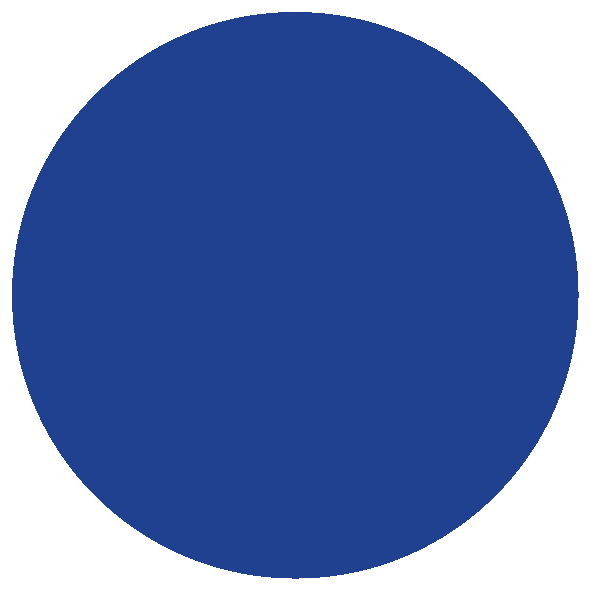
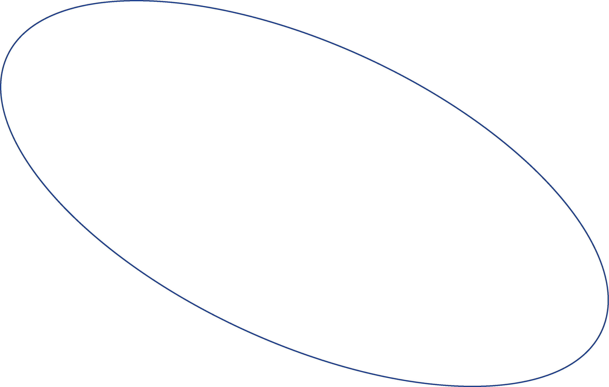

빠른 문제해결 능력
정확한 분석력
멈추지 않는 지속성
열성이 많으며 자기 주장이 강하면서 단호하고 지도력과 통솔력이 있다. 사교활동에 매우 적극적이며 본인이 직접 모임을 주도하고 적극적으로 대화의 주도권을 이끌어 나가는 힘이 있는 성격이다. 이것저것 논리적으로 계산을 하는데도 능숙하고 자기관리능력이 뛰어나 한마디로 유능한 성격의 대표주자이다. 활기찬 성격에 사교활동을 잘하고, 어려운 도전을 마다하지 않고 즐기며 일과 친하다보니 성실한 경우가 많은데다 논리정연하게 따지기를 좋아한다.
Extravert
외향적
68%
iNtuition
직관적
56%
Thinking
사고형
63%
Judging
판단형
75%
정확한 분석으로 뛰어난 문제해결 능력을 보유하고 있으며, 끊임없이 시도하고 도전하는 저만의 장점이 있습니다. 새로운 이슈에 호기심을 가지며, 빠른 판단으로 좋은 성과를 가져왔습니다.
Chapter. 01
그 이름의 무게를 견뎌라 #나라는_확실한_아이덴티티 #고집있다 #한결같다 #경청하는_것
이름은 ‘나’라는 사람을 표현해 주는 확실한 아이덴티티입니다. 그만큼 이름이란 그 사람의 성격과 가치관 심지어 모습까지 보여지기 때문에 개명까지 하는 사람들도 주변에서 쉽게 접할 수 있습니다. 저의 아버지께서는 이름을 지어주실 때 뜻하는 모든 일을 완벽히 완수해 내라는 의미로 지어주셨습니다. 그래서 맡은 일에 대해서는 끈기있고 책임감있게 끝을 봐야하는 성격을 지니고 있습니다. 주변친구들은 저를 보고 ‘고집있다, 한결같다’라는 말을 자주듣게 되었습니다. 처음에는 이런 말들이 좋게만 받아드리지 못하였습니다. 고집있다는 말은 바꾸려 들지 않고 우기기만 하는 사람 같아 보였습니다. 이러한 이미지를 개선하기 위해서 말하는 횟수보다 듣는 횟수를 더욱 늘렸습니다. 인간에게 두 귀와 하나의 혀가 있는 것은 더 많이 듣고 더 적게 말한다는 뜻처럼 조리있게 말하는 것보다 경청하는 것이 더욱 중요하다는 것을 깨달았습니다. 그리하여 처음에는 듣지 못하였던 다른 의견들이 들리기 시작하고 서로가 커뮤니케이션이 되어간다는 것을 느꼇습니다. 또한 자신의 판단을 보류함으로써 열린 마음을 갖게 되었습니다.
Chapter. 02
리서치는 자산 #따라쟁이 #리서치를_수십개씩 #모방은_창조의_어머니
과거의 저는 무엇인가를 보고 영감을 얻어서 새로운 것을 만든다는 것은 매우 어려운 숙제 같았습니다. 기발한 생각, 참신한 아이디어 저한테는 존재하지 않은 단어만 같았습니다. 또한 디자인을 배우면서 따라하는 것을 잘하는 따라쟁이였습니다. 하지만 저는 따라하는 것을 남들보다 두번 세번씩 더 해보면서 리서치를 수십개씩 찾아보기 시작했습니다. 그렇게 따라하면서 눈도 높아지고 손도 빨라지기 시작했습니다. 아리스토텔레스의 명언 중 “모방은 창조의 어머니”라는 말이 있습니다. 여기서 말하는 모방이란 삶의 모습들을 예술이라는 창조 영역의 본바탕으로 쓰라는 것으로 저는 리서치한 자료들이 디자인의 본바탕으로 새롭게 제조합해 창조 영역으로 디자인을 하게 되었습니다.
Chapter. 03
추구하는 디자이너 #불만이_많은_사람 #사용자를_고려 #확실한_컨셉
저의 생각 속 디자인은 우리 삶의 필수요소라고 생각합니다. 디자이너는 불만이 많은 사람으로 이루어져 있습니다. 계속해서 불편한 부분을 찾아 헤매고 매일 새로운 것들을 바꿔 나가야 합니다. 디자인을 이쁘고 멋있게 꾸미는 것 뿐만 아니라 사용자가 얼마나 편리하게 이용하는지 관찰하고 꾸준히 업데이트를 해주어야 합니다. 사용자를 고려하지 않은 디자인은 예술품이라는 사상을 가지고 임하면서 계속해서 불만을 토론할 것 입니다. 이제는 제품의 성능이 1순위가 되지 못합니다. 이유는 제품의 성능은 별차이가 없기 때문에 확실한 컨셉과 아이덴티티를 가지고 있는 제품이 1순위가 되고 있습니다. 그래서 빠르게 변하는 트렌드를 감지하면서 김완수라는 아이덴티티를 키워나가는 디자이너가 되고 싶습니다.
Chapter. 04
젊음의 패기 #친화력 #원활한_커뮤니케이션 #나무로_이루어진_숲
저는 친화력이 좋아서 어느 집단이든 속하는데 어려움이 없었습니다. 원활한 커뮤니케이션 만큼은 다양한 서비스 직종에 아르바이트로 소비자들에게 최고의 서비스를 제공하기 위해서 스스로 연구하고 공부해왔으며, 의사 소통의 대해서 지식을 쌓아왔습니다. 재직중에서도 팀원들과 의견이 충동하는 일이 있더라도 저의 의견을 충분히 설명할 수 있을 뿐만 아니라 상대방을 의견을 수용할 줄 아는 노하우들을 쌓아왔습니다. 나무만 보고 숲을 보지 못하는 디자이너가 아닌 전체를 바라보고 정확한 판단과 현명한 문제 해결 능력을 갖춘 디자이너로 성장해 나갈 것입니다.
메일은 항상 확인하고 있어요. 보내주시면 2일 내로 연락드리겠습니다.
Phone. 010-5018-7751
E-mail. rla_dhks_tn@naver.com